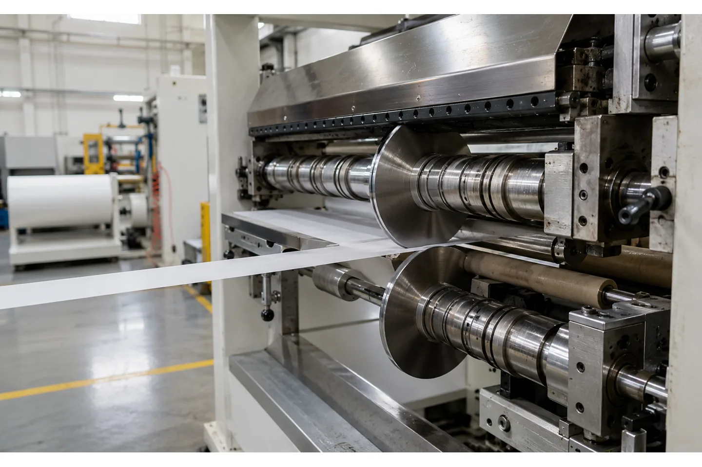
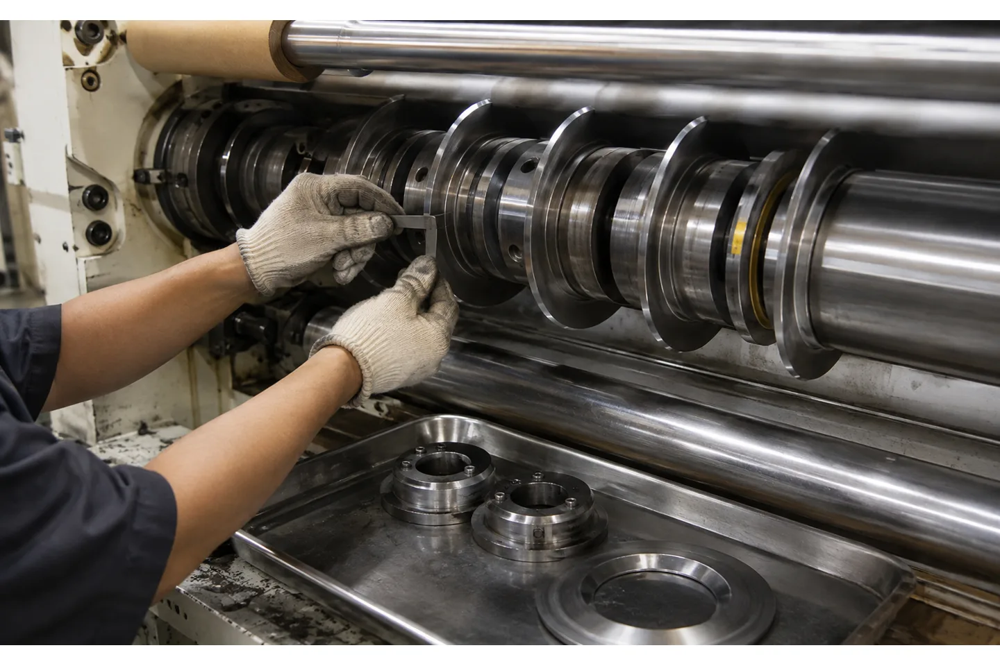

Published August 12, 2026 | By HDPTH Technical Editorial Team

“Set the knives correctly” is not a usable machine specification. A plant manager ordering a slitter rewinder needs to know what the supplier means by clearance, overlap, penetration, knife runout and setup repeatability. Those details determine whether a paper, film or nonwoven web exits with a clean edge or with dust, burrs, stretching and width variation.
The right values are process-dependent. Material thickness, stiffness, compressibility, coating, web tension and the condition of the circular knives all change the result. A credible quotation therefore describes the adjustment method and acceptance test instead of promising one universal number for every roll material.
Start by separating clearance from overlap
Clearance is the side-to-side gap between the active faces of the upper and lower knives. It gives the material room to enter the shear point without being pinched unnecessarily. Overlap is the axial engagement between the cutting edges. Too little overlap can leave an incomplete cut or force the operator to increase web tension; too much can increase rubbing, heat, wear and edge damage.
Terminology varies between tooling suppliers, so the RFQ should include a simple section view or a supplier drawing. Ask the vendor to label the adjustment direction, the reference datum and the measurement method. This avoids a common handover problem in which “overlap” on the machine drawing means a different dimension from “penetration” in the operator manual.
Why the material changes the setting
A stiff coated paper, a soft PE film and a lofty nonwoven do not present the same resistance to a shear knife. A thin extensible film can stretch before the blades meet; a fibrous web can compress and pull fibers from the edge; a coated paper can chip or create dust if the edge is rubbed instead of sheared. Thickness alone is not enough to select a setting.
Give the supplier the material grade, thickness or GSM range, coating or laminate description, maximum web tension, parent-roll condition and the required edge appearance. If several substrates will run on one line, define the changeover recipe range rather than asking for a generic “multi-material” machine. A test cut on actual production stock is more meaningful than a catalog statement about knife compatibility.
Specify the shear-knife mechanics, not just the knife count
The cutting head should be evaluated as a system. Ask whether the upper and lower knives are driven, how the lower anvil is supported, how lateral runout is controlled, and how knives are secured against axial movement. Spacers, separator discs and arbor fits also affect finished slit width. A precise knife edge cannot compensate for a shaft that deflects or a spacer stack that is not repeatable.
For a plant with many width changes, compare manual positioning with an automatic knife system. The value is not simply faster movement. The buyer should verify that the system stores the correct knife positions, confirms the selected recipe and still allows an operator to inspect and clean the cutting head safely. The chosen system must match the material range and the required minimum slit width.

Build adjustment and measurement into the RFQ
Ask for the nominal adjustment range and the smallest practical adjustment increment for clearance and overlap. Also request the tooling drawing, knife diameter range, arbor diameter, permitted knife thickness, spacer tolerance and blade runout limit. These items tell an engineer whether future jobs can be set with the supplied tooling or will require a new knife package.
- Define the minimum and maximum material thickness and the preferred cut method.
- State the minimum finished slit width and the maximum number of slit lanes.
- Specify the required edge appearance: clean, dust-limited, fiber-free or no visible burr, as applicable.
- Ask how a setup is locked, recorded and restored after cleaning or blade replacement.
- Require a maintenance method for checking knife parallelism, runout and damage.
What to verify during factory acceptance testing
FAT should use the buyer’s material, representative core sizes and the width combinations that are hardest to set. Begin with a low-speed safety check, then run steady production conditions and a controlled acceleration or deceleration. Inspect every lane, not only the outside strips. Measure slit width at multiple positions along a roll and record the edge condition with photographs or an agreed inspection method.
Repeat one width change after the operator has removed and reinstalled a knife. The objective is not to prove that a skilled technician can obtain a good cut once; it is to show that the machine, tooling and instructions can reproduce the setting. Record the actual clearance and overlap values used, the material lot, web tension, speed and any edge defects. Link the result to the signed acceptance protocol.
Need a repeatable knife setup?
Send the material thickness range, slit-width plan and a sample edge requirement. HDPTH can review the slitting head, automatic positioning and FAT evidence needed for your project.
Discuss your project with HDPTHBlade maintenance is part of the clearance decision
Knife geometry drifts as edges wear, chips develop or a blade is reground. A supplier should explain the minimum allowable blade height, regrinding limits, recommended cleaning method and storage protection. Keep knives from contacting one another on a bench, and do not use a damaged edge as a reference for setting a new pair.
When a cut deteriorates, do not immediately compensate by changing overlap. First check blade sharpness, runout, the anvil condition, web tension and material tracking. A large overlap correction can hide the cause temporarily and may create a new defect. A short setup checklist in the HMI or manual helps operators distinguish a tooling issue from a tension or guiding issue.
How HDPTH should receive the project data
HDPTH’s high-speed slitting machines are configured around the customer’s roll material, width, speed and cut requirements. For an initial review, send a parent-roll data sheet, finished-roll drawing, sample images of the desired edge, knife preference, core information and a list of width changes per shift. If the job includes nonwoven, paper and film, separate the acceptable edge criteria for each material.
Include the intended factory test: sample length, target speed, number of lanes, measurements, defect limits and who signs the report. A focused requirement package lets the engineering team recommend the slitting head, guiding, tension control and tooling as one system rather than treating the knife clearance as an isolated accessory.
Turn the requirement into an RFQ line item
Before comparing quotations for slitter rewinder knife clearance and overlap: a buyer’s specification guide, put the operating requirement in a form that two suppliers can price and test in the same way. State the material family and its full working range, the parent-roll condition, the finished-roll drawing, the core, the number of lanes, the target speed and the changeover pattern. If the job includes more than one substrate, list each substrate separately instead of using a single average value.
- Define the quality result the plant must accept, such as edge condition, roll profile, web presence, winding stability or commissioning evidence.
- List the measurement method, sample size, inspection locations, conditioning time and who signs the result.
- Ask for the relevant tooling, sensor, tension, guiding, drive and guarding details in the supplier response.
- Require a FAT trial on representative material and a clear method for repeating the setup after cleaning, transport or a material change.
This structure helps procurement compare like with like and gives production, maintenance and quality teams a shared handover record. It also makes later troubleshooting faster: the team can see whether a result changed because of the material, the recipe, the measurement method or the machine. A concise requirement sheet is usually more valuable than a long list of headline specifications with no acceptance method.
Buyer FAQs
Is knife clearance the same as knife overlap?
No. Clearance is the side gap between the upper and lower knife faces. Overlap or penetration is the amount by which the cutting edges engage one another. The supplier should show both dimensions on the tooling drawing.
Can one knife setting work for paper, film and nonwoven?
A single fixed setting should not be assumed. Different materials compress, stretch and fracture differently. A multi-material line needs an adjustment range, documented recipes and trials on the actual substrates.
What should I measure at a knife-clearance FAT?
Measure slit width and edge condition across all lanes, and record speed, tension, material thickness, blade identification, clearance and overlap. Repeat a setup after a knife change to check reproducibility.
What causes a clean cut to become dusty?
Possible causes include a worn or damaged blade, incorrect clearance or overlap, an unsuitable slitting method, web vibration, excess tension and material coating or fiber characteristics. Diagnose the whole cutting zone before changing one setting.
Should I specify automatic knife positioning?
It is useful when width changes are frequent or positioning repeatability matters. Confirm the system’s minimum slit width, recipe controls, manual override, guarding and the time for a complete changeover on your production material.
Sources
- Maxwell Slitters: Top Slitter Knives and Rewinder Slitter Knives catalog
- Phoenix Machine: slitter/re-winder configurations and shear tooling
- DFE: Slitter-Rewinder Tension Control application note
Specify the cut before you specify the machine
Share your substrates, widths, core sizes and edge-quality target with the HDPTH engineering team. The quotation can then define knife tooling, adjustment, testing and operator handover together.
Send an RFQ to HDPTH